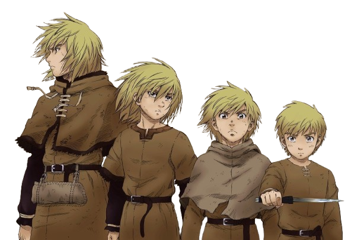

Le manga Vinland Saga suit un jeune garçon nommé Thorfinn et sa quête de vengeance pour son père, Thors. Le manga suit le temps présent pendant les premiers chapitres, puis revient dans le passé de Thorfinn, donnant au lecteur son histoire et sa raison de chercher à se venger.
Regardez cette vidéo pour en apprendre plus :
Regarder sur YouTube